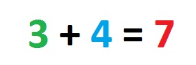

Synaesthesia and processing overload
Synaesthesia can also be accompanied with poorer outcomes in the classroom. In particular, research suggests a number of experiences that could be disruptive to learning and well-being. These areas are outlined below with suggested solutions to support the child at school.

Visual confusions: A child with synaesthesia might experience difficulties with maths, sums and numbers. For example, he or she may regularly confuse two numbers that are coloured the same in her synaesthesia. Suggested support: Simply have an awareness of the difficulties that can be caused and take this into account when interpreting the child’s responses. You can also encourage the benefits. We know, for example, that synaesthetes with coloured numbers can improve their recall for numbers by trying to remember the different colours that accompany them.
Visual Distractions: A child experiences difficulty because the sound of music from the music room next door is causing colours that are obscuring her view of the white board. Suggested support: Believe the report, and try to minimise the noise.
Sensory Overload: One often-reported problem is that synaesthesia can cause a sensory overload. This is when the sensations triggered by synaesthesia can feel overwhelming or unpleasant. Although this might happen to any child with synaesthesia, it can be particularly pronounced or problematic if the child also happens to have an Autism Spectrum Condition such as Asperger Syndrome (you can read about the relationship between synaesthesia and autism here. Suggested support: Try to remove from the environment any unnecessary stimulus that is contributing to the overload. Allow time in a quiet environment to defuse the discomfort.

Conflicting information within the classroom: People with synesthesia can feel uncomfortable when seeing things in the environment in the ‘wrong’ colours, in other words, in colours that conflict with their synesthesia. For example, classrooms often have a coloured alphabet on display; this can cause slight discomfort for some children with synesthesia who might have their own colours for letters, which likely will not match. Suggested support: replace the coloured alphabet with a black and white one. If this isn't possible, be aware of the difficulties in using coloured letters and numbers with synesthetic children and take this into account when directing their learning activities. In general, you might seek to understand how teaching aids may be influencing the child and adjust accordingly.
Ineffective processing styles: children with sequence-space synesthesia can see numbers mapped out in space, in spatial patterns like lines, ellipses or zig-zags (imagine a 'number landscape' mapped out in front of the body). People with this form of synesthesia can have problems with multiplication because they may be relying on their visual/spatial numbers when in fact the best strategy is to use verbal memory speed (ref 1). Suggested support: you may find the child needs more time and encouragement when rote-learning the multiplication tables, and you might encourage a more verbal style in this regard.
References
1. Ward, et al. (2009). The Impact of Visuo-Spatial Number Forms on Simple Arithmetic. Cortex, 45.